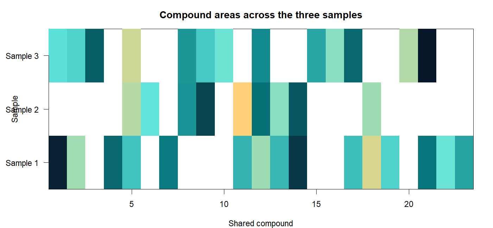
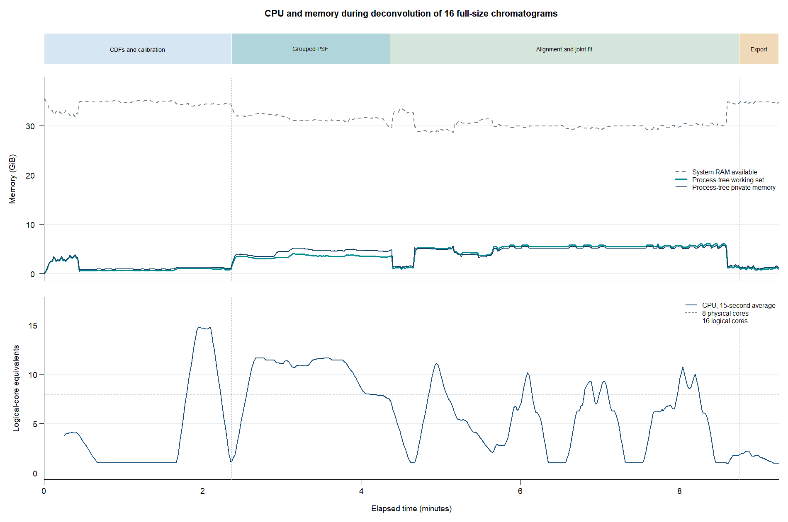
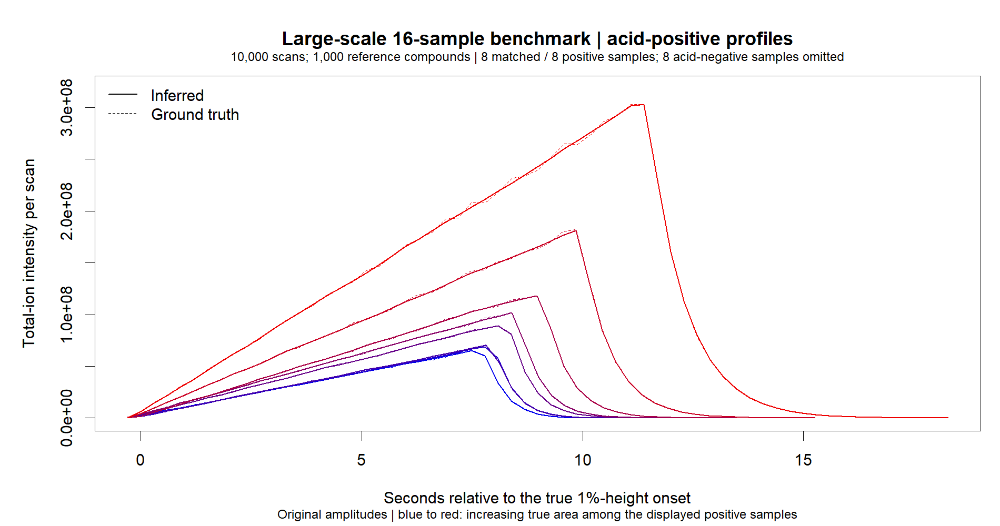

Simultaneous multisample log-concave NMF with automatic best rank tuning
Source:vignettes/articles/simultaneous-nmf.Rmd
simultaneous-nmf.RmdlogconNMF() combines related multichannel samples into a
common spectral library while fitting each sample’s own compound areas,
peak shapes and smooth background. Samples retain their measured time
grids. The model accommodates retention-time drift,
concentration-dependent widths and tails, and compounds that occur in
only some samples.
Ignoring backgrounds and offsets, the model is Y_s\approx Q_sP, with one shared nonnegative spectral factor P and sample-specific profile/area factors Q_s. This is simultaneous NMF in the terminology of Cichocki et al., Badea and Lee et al.. It is an exact shared-factor model.
fit <- logconNMF(samples, family=quasipoisson("identity"), precluster=32L)
fit$rank # estimated number of shared compounds
fit$areas # samples x consensus compounds
coef(fit, normalize="l1") # common spectra
fitted(fit, sample=1L) # original-grid fitted signal
sampleNMF(fit, sample=1L) # standard per-sample NMF object
GIC(fit)Each sample description contains y, time,
and either a candidate PSF matrix X or an independent
logconNMF() fit. Matrices can be supplied through RDS
paths. Observations, factors, weights and offsets are stored per sample.
The grouped PSF regressions run in separate workers. For joint
conditional updates the solver holds observations, fitted means and
shared spectra in memory. The general identity-link solver can stream
blocks of ions from the per-sample files. ## Three samples, shared
spectra and different peak shapes
The simulator provides exponentially modified Gaussian peaks, broad
triangular acid profiles, smooth backgrounds and irregular scan
intervals. Peak width, tailing and retention time can depend on
concentration and position in the chromatogram.
presence=0.5 makes compounds absent independently in half
of the samples on average.
sim <- simulateGCMSSamples(samples=3L, n=c(580L,600L,620L), k=26L,
preset="time_area_acid", presence=0.5, seed=811)
samples <- lapply(sim$samples, function(s) list(
y=s$Y, time=s$time, edges=s$edges, exposure=s$raw_exposure,
sample_id=s$sample_id,
X=convMatrix(dnorm(-8:8, sd=1.6), nrow(s$Y)),
background=splines::bs(s$time, df=4L, intercept=TRUE),
small_width=2 * sqrt(2 * log(100)) * 1.6 * median(diff(s$time))))
fit <- logconNMF(samples, family=poisson("identity"), ncores=8L,
control=list(initial=list(profile_cycles=4L, fusion_passes=2L)))
fit$areas
plot(fit, type="profiles", compounds=c(1L,12L))The three-sample validation retains all 258 mass
channels. With every compound present, it recovers 26
shared compounds and all 78 occurrences. With
presence=0.5, the realized data contain 23 shared
compounds and 37 occurrences, all recovered. Missing
occurrences remain NA in the area table.
| Simulation | True shared compounds | Recovered | True occurrences | Recovered | False calls | Total time |
|---|---|---|---|---|---|---|
| All compounds present | 26 | 26 | 78 | 78 | 0 | 20.80 s |
| 50% presence probability | 23 | 23 | 37 | 37 | 0 | 17.87 s |
Each timing includes independent fits, alignment, grouping and simultaneous refinement, with a budget of eight logical cores and one BLAS thread per worker on an Intel Core i9-11950H. Simulation is excluded. Recovery uses the nearest normalized true spectrum, with cosine similarity at least 0.9 and a single match per compound within each sample.


Shared spectra are estimated from all detected occurrences of a compound:

Two distinct 16-sample benchmarks
The two experiments use different simulated chromatograms. Both retain the native scan grids and report recovery against the generating compounds.
| Setting | Small-scale software comparison | Large-scale resource validation |
|---|---|---|
| Samples | 16 | 16 |
| Scans per sample | 1,200 | 10,000 |
| Recorded ion channels | 258 | 550 |
| Reference compounds | 100 | 1,000 |
| True occurrences | 769 | 7,917 |
| Samples containing the acid | 7 | 8 |
| PSF calibration | Blind, two windows | Standard-assisted, ten windows |
| Complete 16-sample analysis | 54.94 s (0.92 min) | 552.69 s (9.21 min) |
Both runs used GCMSprime and logconNMF 0.1.0.9006. Timings cover the complete batch from CDF input through export. In the small experiment, CDF preparation, calibration and grouping took 11.34 s, grouped initialization and joint refinement took 39.45 s, and result construction and export took 3.91 s. The benchmark wrapper added 0.24 s. The large experiment is documented below.
Small-scale 16-sample software comparison
The small-scale fit (seed 9118) uses two blind-PSF
windows, three PSF iterations, 32 common ion groups and up to 12 initial
conditional sweeps on the original channels. All profile figures for
this simulation on both websites use the same saved fit.
A 16-sample simulation contains 100 reference compounds, 1,200 scans and 258 ion channels per chromatogram. Compounds occur in about half the samples, giving 769 true occurrences. Concentration-dependent EMG profiles, one acid-like compound, retention drift and an experimentally derived smooth background create overlapping signals on the original acquisition grids. The generating quasi-Poisson dispersion is 783.18; the fitted median is 829.55.
The GCMSprime CDF workflow, built on logconNMF, recovers all 769 true occurrences with only 26 false positives (peak F1 0.983), including the acid in all seven samples where it occurs. It takes 54.94 s with four two-thread PSF workers and eight threads available for joint refinement on an HP ZBook Fury G8 with an Intel Core i9-11950H, eight physical cores and 16 logical threads. The common 32-group map accelerates initialization; final spectra retain all 258 original channels.

The seven-workflow comparison reports areas, spectral similarities, within-spectrum sparsity and component counts. To reproduce this small fit and its figures with GCMSbenchmark:
library(GCMSbenchmark)
bench <- system.file("benchmarks", package="GCMSbenchmark", mustWork=TRUE)
source(file.path(bench, "simulated-16.R"), encoding="UTF-8")
small <- runBenchmark16("benchmark-small", method="GCMSprime", ncores=8L)
small$summary[c("analysis_s", "TP", "FP", "FN", "F1")]
# Optional figures from the saved results:
source(file.path(bench, "plot-simulated-16.R"), encoding="UTF-8")
plotBenchmark16("benchmark-small")Use a fresh output directory. The bundled recipe supplies the simulation, empirical background and the explicit fast settings described above.
Large-scale 16-sample resource benchmark
This independent simulation (seed 171117) has 16
chromatograms, 10,000 scans, 550 recorded ion channels and 1,000
reference compounds. Their spectra occupy 258 channels. The
remaining channels contain background. The simulated peaks broaden with
abundance and drift in retention time. The data include irregular scan
intervals, a background estimated from gcmsData2 and
quasi-Poisson dispersion 783.18. A separate narrow-peak standard
supplies the time-varying PSF.
The conditional solver estimated 1,002 shared identities from the original ion measurements. All 7,917 true occurrences were recovered, including every occurrence of the shark-fin acid. The largest absolute area error among the eight acid occurrences was 0.19%.
| Quantity | Measured result |
|---|---|
| True occurrences recovered | 7,917 / 7,917 |
| False positives / false negatives | 13 / 0 |
| Occurrence F1 | 0.99918 |
| Joint quasi-GIC | 34,062,277 |
| Median spectral cosine | 0.9999989 |
| Mean within-spectrum ion F1 | 0.99519 |
| Mean profile cosine | 0.999984 |
| Median absolute peak-area error | 0.095% |
| Adjusted log-area R² | 0.999976 |
| Acid occurrences recovered | 8 / 8 |
Scoring uses maximum-cardinality one-to-one matching within 0.25 minutes and a minimum spectral cosine of 0.9. Ion-support F1 uses a shared cutoff of 0.1% of base-peak intensity. Area and profile accuracy are measured on matched occurrences. The small-scale software comparison uses RI-constrained reciprocal hits.
| CDF workflow stage | Seconds |
|---|---|
| Reading data, preparing sample PSFs and initialization | 139.60 |
| Grouped PSF regression, alignment and joint original-channel refinement | 383.22 |
| Constructing and exporting results | 29.87 |
| Complete fit and exports | 552.69 |
Within the 383.22 s coupled stage, grouped PSF regression took 119.65 s and alignment and joint refinement took 263.33 s. Simulation, separate standard calibration and scoring against truth are outside the timed fit.
On the HP ZBook Fury G8 (Core i9-11950H, eight physical cores, 16 logical cores and 64 GB RAM), the memory-aware scheduler used 6 PSF workers with 2 threads each. The joint solver could use all 16 threads. Across the measured workflow the process tree averaged 5.61 logical-core equivalents and peaked at 6.12 GiB working set and 5.78 GiB private memory. At least 28.57 GiB of physical memory stayed available.


In the left panel, the red bar segments count unmatched calls and the open circles give the true counts. The right panel shows only calls paired with a true occurrence. Violet diamonds identify the eight matched acid peaks. The dashed line marks exact agreement and the shading is the ordinary 95% prediction interval on the log scale.

The acid panel displays the eight correctly matched acid-positive samples from this separate 16-sample large-scale simulation. The acid is absent from the other eight samples, which are omitted from this positive-case shape comparison; this panel does not assess false acid assignments in absent samples. Colours rank the eight displayed true areas from blue to red. The x-axis is seconds relative to each true 1%-height onset. In contrast, the small-scale figures include all 16 samples (seven acid-positive, nine with zero true acid signal), rank colours over all 16 areas, and use retention index. Both displays retain original count amplitudes without unit-height or unit-area normalization. Fitting uses each sample’s original scan grid.
The complete reproducible script and compact measured results are supplied with the source. From the GCMSprime repository root:
# Run from a GCMSprime repository checkout; use a fresh output directory.
source("benchmarks/benchmark_fullsize_16.R")
benchmarkFullsize16("benchmark-large", stage="all", ncores=16L)
plotFullsize16Acid("benchmark-large")This writes inputs, fitted results (including timings), scoring
tables and the acid PNG to benchmark-large. Separate
stage="prepare", "fit" and
"score" calls are available when restarting a stage. The
default directory, when omitted, is
codex_sandbox/fullsize16.
Original scan grids, shared spectra and missing compounds
Each sample retains its measured time grid, background and noise parameters. Monotone alignment changes profile coordinates and bin widths; observations are evaluated directly without resampling. Each detected occurrence has its own log-concave shape and amplitude, while its spectrum is shared.
The joint criterion counts one unit-sum spectrum per consensus component and one amplitude per detected occurrence. Profile and background complexity are unpenalized. Original-channel likelihood checks decide whether a complete grouped/refined candidate is retained.
fit$areas
fit$compounds
fit$alignment
single <- sampleNMF(fit, sample=1L)
dim(single$H)
dim(coef(single))
plot(fit, type="areas")An absent occurrence stays NA; this model does not fill
undetected compounds. The simultaneous model and
algorithm give the exact likelihood, Jacobian, normalization, pooled
spectral updates and rank charge.
Noise, exposure and disk-backed fitting
Gaussian, Poisson, quasipoisson, NB2, NB1, censored Gamma and
common-scale Gamma are supported. Noise parameters are shared over
channels within each sample. Use positive
dispersion/theta to fix known parameters;
negative NB2 theta enables bounded likelihood-improving
updates from its absolute starting value.
Known observation exposure can be given as a scalar or scan vector in
each sample description. It multiplies the mean; the identity-link
offset adds known signal. The default unit exposure
preserves the units of supplied data. Alignment’s change in bin widths
preserves integrated occurrence areas.
Grouped PSF regressions divide the core budget between independent
samples and native threads. The scheduler estimates how many regressions
fit in available memory, including Windows commit headroom. After those
workers exit, a single process shares the original ion counts and fitted
means. It updates profiles and backgrounds across samples and fits
disjoint ion columns of the shared spectra concurrently. Peak merges and
exchanges retain their original order. The general identity-link solver
can stream original-channel blocks from disk. Use
control=list(workers=4L) for an explicit sample-worker cap.
Keep the fitted store alongside saved objects.
For sample-group directories, acquisition ordering, alkane standards and Excel/MSP reports, use the workflow in GCMSprime.